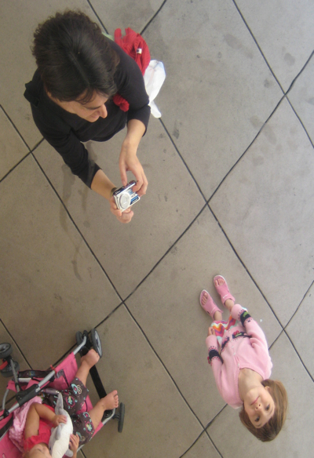
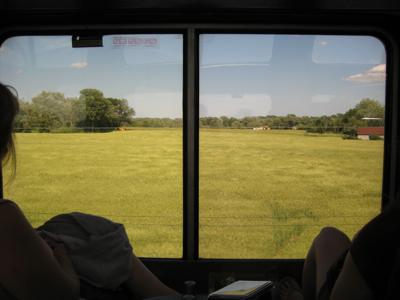

In our last installment, recall that we went to bed on board the Lake Shore Limited expecting to arrive in Chicago at around 9:45 AM. And we did.
As sleeping car ticket holders for the Empire Builder, we were allowed to use the Metropolitan Lounge at the Chicago Amtrak Station. This is no big honor, because there are many overnight trains that depart from Chicago. Still, it was nice to have a resting spot where we could check our bags. Our train wasn't to leave until 2:15 PM, which gave us plenty of time to roam around the Loop. We checked out the Sears Tower, which was closed due to wind (or so they said . . .)
We walked over to Millennium Park and looked at the fountains and at Anish Kapoor's "Cloud Gate." Why doesn't Boston have any world-class outdoor art spot right downtown?

As luck would have it, on arrival we discovered that it was the first day of Taste of Chicago in Grant Park. This isn't like a Taste of Cambridge, which is an outdoor (and expensive) event catered by the finer restaurants in town; this is an outdoor munch fest hosted by the fried and fat segment of Chicago's fooderies. Caroline and Julie split a nice waffle, and I ate potato- and saurkraut-filled pirogies, which were delightful. Oh, and then some ice cream. After all that, we were tired and went back to the station.
Sleeper car ticket holders were called to the front of the lounge to meet with the conductor. Julie was told that we didn't have a train! Uh oh. There was much concern among the passengers-to-be, but in the end we left right on time.
We got on our train and proceeded to a "family room." This is a sleeper with four beds, one of them wide enough for two skinny parents to cohabitate. We picked it for the extra room, though a downside was that it didn't have its own bathroom -- the shower was done the hall. In general, the sleeper seemed newer, cleaner, and not dingy. One thing, however: The cars on the Empire Builder are "Superliners," and have two levels on each car. Because of this, the headroom is somewhat limited. It's not much of an issue for standing in the sleeper, but if you're sleeping in the top bunk, it's a bit like being in a coffin. Claustrophobes beware.
Once on the train we proceeded through Wisconsin. There was a "Rails and Trails" guide on board in the lounge car (observation car) to provide geographical and anthropological points of interest regarding the people from America's Dairyland.

But for the most part, it a flat and green Midwest to behold, with which I am much familiar. I thought I had gotten some pics of the Wisconsin Dells, but apparently not; maybe they're on Julie's camera.
After settling down in our sleeper, we made reservations for the dining car. We were only 3, and one may be seated with strangers to fill out the full table of 4. I ordered catfish; Julie ordered lamb shank; and Caroline had penne with meatballs. It was pretty good!
There was also a half-bottle of some mediocre wine; more about train wine in the post for Day 3.
After dinner there was more window-gazing at dairy country, which lulled us into a sleepy state, and back to the sleeping car.
I woke up at around 10:30 PM because I wanted to observe the entry into St. Paul, where I had gone to high school. At this time of night, the lounge car was pretty deserted. I was still a bit buzzed from dinner so I grabbed a root beer and went up to watch. I got out my iPhone and observed the approach with Google Maps and the built-in GPS. To my surprise, the tracks into St. Paul go right below Linwood Park:
When I played Little League at Linwood and was waiting to bat, I would surreptitiously walk over to the fence on the edge of the park, and look down at the tracks (perhaps some 50 feet below and 100 yards distant). Frequently a freight train would go by, and I would count the cars and think about hopping a train so as to "light out for the Territory," if you know what I mean.
Now I was on those very tracks, looking up into the dark as Linwood passed by.
After that, the approach to Midway Station was uneventful; I did see the Cathedral of St. Paul, but not much else of great notice. Weary, I went back to the sleeper, to dream of lighting out for the Territory . . .
comments powered by Disqus